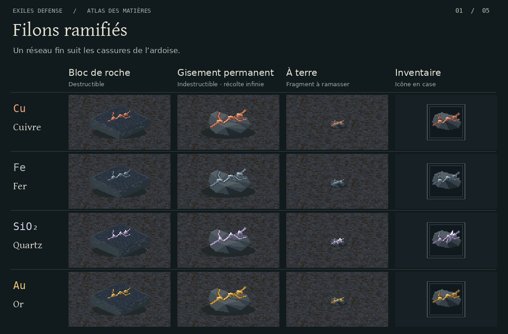
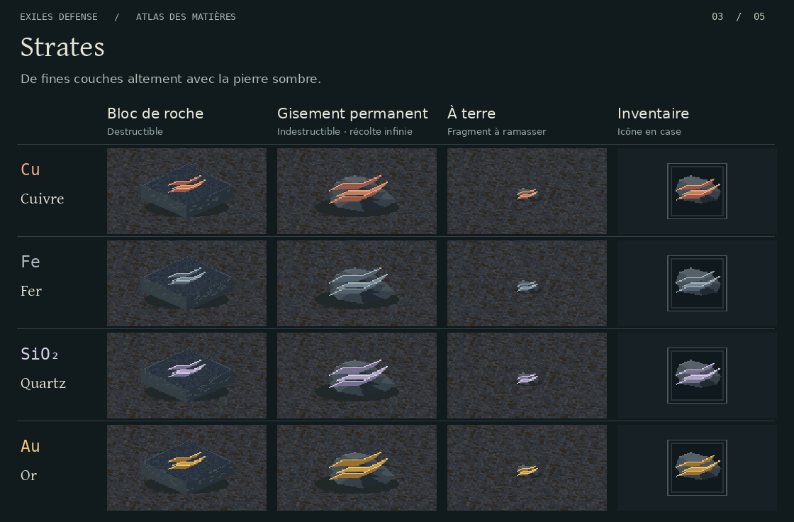
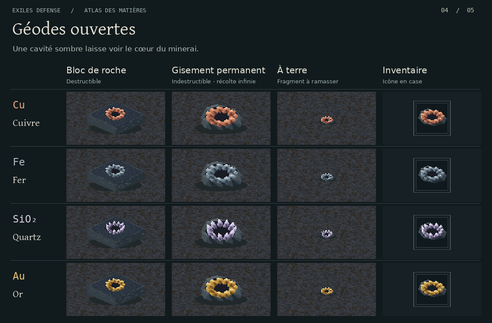
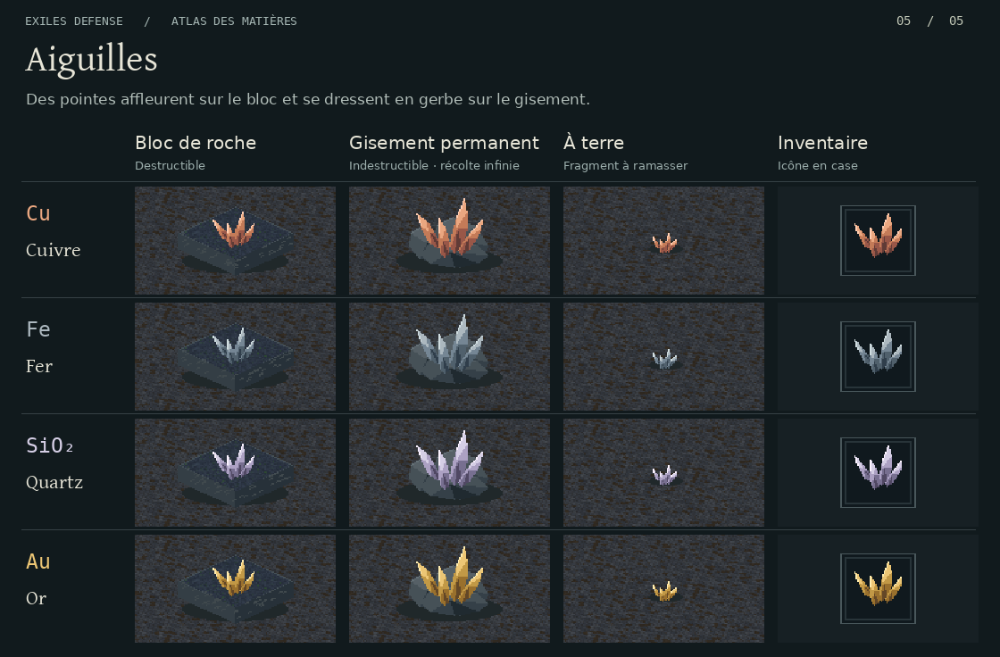

<!doctype html><html lang="fr"><meta charset="utf-8"><meta name="viewport" content="width=device-width, initial-scale=1"><title>Atlas des minerais · Exiles Defense</title>
<style>*{box-sizing:border-box}body{background:#0c1214;color:#e8e5d9;font:16px/1.45 system-ui;margin:0}main{max-width:1144px;margin:22px auto;padding:0 12px}nav{display:flex;flex-wrap:wrap;gap:6px;margin:12px 0}button{background:#182326;color:#c1ccc7;border:1px solid #465451;padding:8px 13px;cursor:pointer;font:inherit;border-radius:3px}button[aria-pressed=true]{color:#10191a;background:#d6d6bb}#pause{margin-left:auto}figure{position:relative;margin:0;border:1px solid #394449}img{width:100%;display:block}svg{position:absolute;inset:0;width:100%;height:100%;pointer-events:none}path{animation:eclat 3.8s infinite;opacity:0}.stop path{animation:none}@keyframes eclat{0%,68%,85%,100%{opacity:0}75%{opacity:.92}80%{opacity:.28}}small{color:#abb8b4}a{color:#d7cfab}@media(max-width:680px){.scroll{overflow-x:auto}figure{min-width:760px}}</style><main><small>PLANCHE DE VALIDATION &nbsp; / &nbsp; Choisissez une piste pour comparer ses quatre formes.</small><nav><button data-i="0" aria-pressed="true">01 · Filons ramifiés</button><button data-i="1" aria-pressed="false">02 · Nodules</button><button data-i="2" aria-pressed="false">03 · Strates</button><button data-i="3" aria-pressed="false">04 · Géodes ouvertes</button><button data-i="4" aria-pressed="false">05 · Aiguilles</button><button id="pause">Suspendre les reflets</button></nav><div class="scroll"><figure ><svg viewBox="0 0 1120 736" aria-hidden="true"><path style="animation-delay:-0.00s" transform="translate(265 252)" fill="#ffceb2" d="M0 -4L.8 -1 4 0 .8 .8 0 4 -.8 .8 -4 0 -.8 -1Z"/><path style="animation-delay:-1.37s" transform="translate(508 255)" fill="#ffceb2" d="M0 -4L.8 -1 4 0 .8 .8 0 4 -.8 .8 -4 0 -.8 -1Z"/><path style="animation-delay:-2.74s" transform="translate(265 382)" fill="#d0dde0" d="M0 -4L.8 -1 4 0 .8 .8 0 4 -.8 .8 -4 0 -.8 -1Z"/><path style="animation-delay:-0.31s" transform="translate(508 385)" fill="#d0dde0" d="M0 -4L.8 -1 4 0 .8 .8 0 4 -.8 .8 -4 0 -.8 -1Z"/><path style="animation-delay:-1.68s" transform="translate(265 510)" fill="#fcf3ff" d="M0 -4L.8 -1 4 0 .8 .8 0 4 -.8 .8 -4 0 -.8 -1Z"/><path style="animation-delay:-3.05s" transform="translate(508 512)" fill="#fcf3ff" d="M0 -4L.8 -1 4 0 .8 .8 0 4 -.8 .8 -4 0 -.8 -1Z"/><path style="animation-delay:-0.62s" transform="translate(265 642)" fill="#ffedb0" d="M0 -4L.8 -1 4 0 .8 .8 0 4 -.8 .8 -4 0 -.8 -1Z"/><path style="animation-delay:-1.99s" transform="translate(508 645)" fill="#ffedb0" d="M0 -4L.8 -1 4 0 .8 .8 0 4 -.8 .8 -4 0 -.8 -1Z"/></svg></figure><figure hidden><svg viewBox="0 0 1120 736" aria-hidden="true"><path style="animation-delay:-0.53s" transform="translate(278 258)" fill="#ffceb2" d="M0 -4L.8 -1 4 0 .8 .8 0 4 -.8 .8 -4 0 -.8 -1Z"/><path style="animation-delay:-1.90s" transform="translate(528 262)" fill="#ffceb2" d="M0 -4L.8 -1 4 0 .8 .8 0 4 -.8 .8 -4 0 -.8 -1Z"/><path style="animation-delay:-3.27s" transform="translate(278 386)" fill="#d0dde0" d="M0 -4L.8 -1 4 0 .8 .8 0 4 -.8 .8 -4 0 -.8 -1Z"/><path style="animation-delay:-0.84s" transform="translate(528 391)" fill="#d0dde0" d="M0 -4L.8 -1 4 0 .8 .8 0 4 -.8 .8 -4 0 -.8 -1Z"/><path style="animation-delay:-2.21s" transform="translate(278 513)" fill="#fcf3ff" d="M0 -4L.8 -1 4 0 .8 .8 0 4 -.8 .8 -4 0 -.8 -1Z"/><path style="animation-delay:-3.58s" transform="translate(528 516)" fill="#fcf3ff" d="M0 -4L.8 -1 4 0 .8 .8 0 4 -.8 .8 -4 0 -.8 -1Z"/><path style="animation-delay:-1.15s" transform="translate(278 648)" fill="#ffedb0" d="M0 -4L.8 -1 4 0 .8 .8 0 4 -.8 .8 -4 0 -.8 -1Z"/><path style="animation-delay:-2.52s" transform="translate(528 652)" fill="#ffedb0" d="M0 -4L.8 -1 4 0 .8 .8 0 4 -.8 .8 -4 0 -.8 -1Z"/></svg></figure><figure hidden><svg viewBox="0 0 1120 736" aria-hidden="true"><path style="animation-delay:-1.06s" transform="translate(266 261)" fill="#ffceb2" d="M0 -4L.8 -1 4 0 .8 .8 0 4 -.8 .8 -4 0 -.8 -1Z"/><path style="animation-delay:-2.43s" transform="translate(511 268)" fill="#ffceb2" d="M0 -4L.8 -1 4 0 .8 .8 0 4 -.8 .8 -4 0 -.8 -1Z"/><path style="animation-delay:-0.00s" transform="translate(266 391)" fill="#d0dde0" d="M0 -4L.8 -1 4 0 .8 .8 0 4 -.8 .8 -4 0 -.8 -1Z"/><path style="animation-delay:-1.37s" transform="translate(511 398)" fill="#d0dde0" d="M0 -4L.8 -1 4 0 .8 .8 0 4 -.8 .8 -4 0 -.8 -1Z"/><path style="animation-delay:-2.74s" transform="translate(266 521)" fill="#fcf3ff" d="M0 -4L.8 -1 4 0 .8 .8 0 4 -.8 .8 -4 0 -.8 -1Z"/><path style="animation-delay:-0.31s" transform="translate(511 528)" fill="#fcf3ff" d="M0 -4L.8 -1 4 0 .8 .8 0 4 -.8 .8 -4 0 -.8 -1Z"/><path style="animation-delay:-1.68s" transform="translate(266 651)" fill="#ffedb0" d="M0 -4L.8 -1 4 0 .8 .8 0 4 -.8 .8 -4 0 -.8 -1Z"/><path style="animation-delay:-3.05s" transform="translate(511 658)" fill="#ffedb0" d="M0 -4L.8 -1 4 0 .8 .8 0 4 -.8 .8 -4 0 -.8 -1Z"/></svg></figure><figure hidden><svg viewBox="0 0 1120 736" aria-hidden="true"><path style="animation-delay:-1.59s" transform="translate(243 258)" fill="#ffceb2" d="M0 -4L.8 -1 4 0 .8 .8 0 4 -.8 .8 -4 0 -.8 -1Z"/><path style="animation-delay:-2.96s" transform="translate(472 264)" fill="#ffceb2" d="M0 -4L.8 -1 4 0 .8 .8 0 4 -.8 .8 -4 0 -.8 -1Z"/><path style="animation-delay:-0.53s" transform="translate(243 388)" fill="#d0dde0" d="M0 -4L.8 -1 4 0 .8 .8 0 4 -.8 .8 -4 0 -.8 -1Z"/><path style="animation-delay:-1.90s" transform="translate(472 394)" fill="#d0dde0" d="M0 -4L.8 -1 4 0 .8 .8 0 4 -.8 .8 -4 0 -.8 -1Z"/><path style="animation-delay:-3.27s" transform="translate(242 515)" fill="#fcf3ff" d="M0 -4L.8 -1 4 0 .8 .8 0 4 -.8 .8 -4 0 -.8 -1Z"/><path style="animation-delay:-0.84s" transform="translate(471 519)" fill="#fcf3ff" d="M0 -4L.8 -1 4 0 .8 .8 0 4 -.8 .8 -4 0 -.8 -1Z"/><path style="animation-delay:-2.21s" transform="translate(243 648)" fill="#ffedb0" d="M0 -4L.8 -1 4 0 .8 .8 0 4 -.8 .8 -4 0 -.8 -1Z"/><path style="animation-delay:-3.58s" transform="translate(472 654)" fill="#ffedb0" d="M0 -4L.8 -1 4 0 .8 .8 0 4 -.8 .8 -4 0 -.8 -1Z"/></svg></figure><figure hidden><svg viewBox="0 0 1120 736" aria-hidden="true"><path style="animation-delay:-2.12s" transform="translate(284 250)" fill="#ffceb2" d="M0 -4L.8 -1 4 0 .8 .8 0 4 -.8 .8 -4 0 -.8 -1Z"/><path style="animation-delay:-3.49s" transform="translate(539 246)" fill="#ffceb2" d="M0 -4L.8 -1 4 0 .8 .8 0 4 -.8 .8 -4 0 -.8 -1Z"/><path style="animation-delay:-1.06s" transform="translate(284 380)" fill="#d0dde0" d="M0 -4L.8 -1 4 0 .8 .8 0 4 -.8 .8 -4 0 -.8 -1Z"/><path style="animation-delay:-2.43s" transform="translate(539 376)" fill="#d0dde0" d="M0 -4L.8 -1 4 0 .8 .8 0 4 -.8 .8 -4 0 -.8 -1Z"/><path style="animation-delay:-0.00s" transform="translate(284 510)" fill="#fcf3ff" d="M0 -4L.8 -1 4 0 .8 .8 0 4 -.8 .8 -4 0 -.8 -1Z"/><path style="animation-delay:-1.37s" transform="translate(539 506)" fill="#fcf3ff" d="M0 -4L.8 -1 4 0 .8 .8 0 4 -.8 .8 -4 0 -.8 -1Z"/><path style="animation-delay:-2.74s" transform="translate(284 640)" fill="#ffedb0" d="M0 -4L.8 -1 4 0 .8 .8 0 4 -.8 .8 -4 0 -.8 -1Z"/><path style="animation-delay:-0.31s" transform="translate(539 636)" fill="#ffedb0" d="M0 -4L.8 -1 4 0 .8 .8 0 4 -.8 .8 -4 0 -.8 -1Z"/></svg></figure></div><p><a href="minerais-apercu.png">Comparer les cinq gisements côte à côte</a></p><script>
const tabs=[...document.querySelectorAll('[data-i]')],figs=[...document.querySelectorAll('figure')];tabs.forEach((btn,i)=>btn.onclick=()=>tabs.forEach((t,j)=>{t.setAttribute('aria-pressed',i===j);figs[j].hidden=i!==j}));const pause=document.getElementById('pause');function motion(off){document.body.classList.toggle('stop',off);pause.textContent=off?'Animer les reflets':'Suspendre les reflets'}motion(matchMedia('(prefers-reduced-motion: reduce)').matches);pause.onclick=()=>motion(!document.body.classList.contains('stop'));</script></main></html>